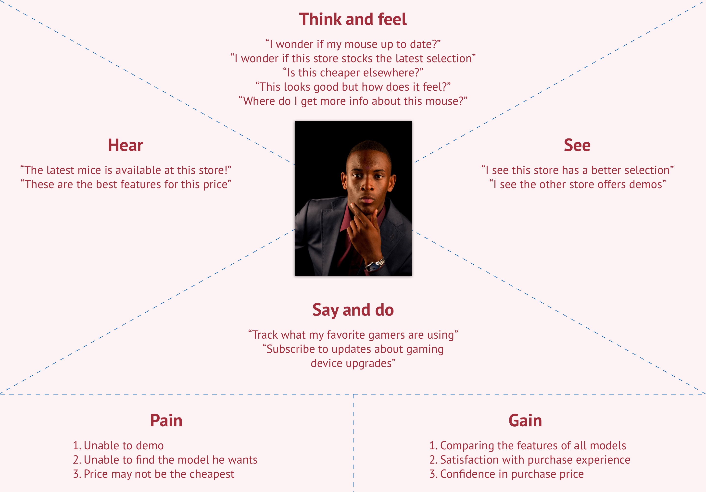
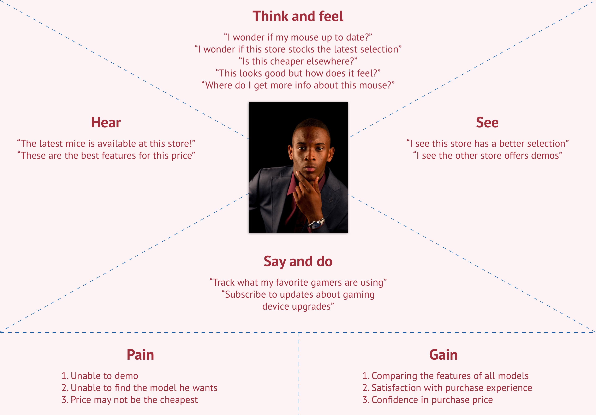
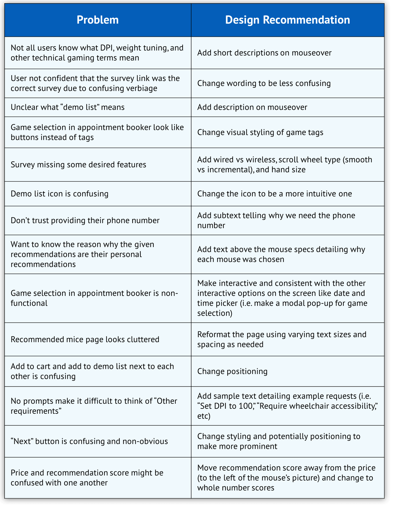
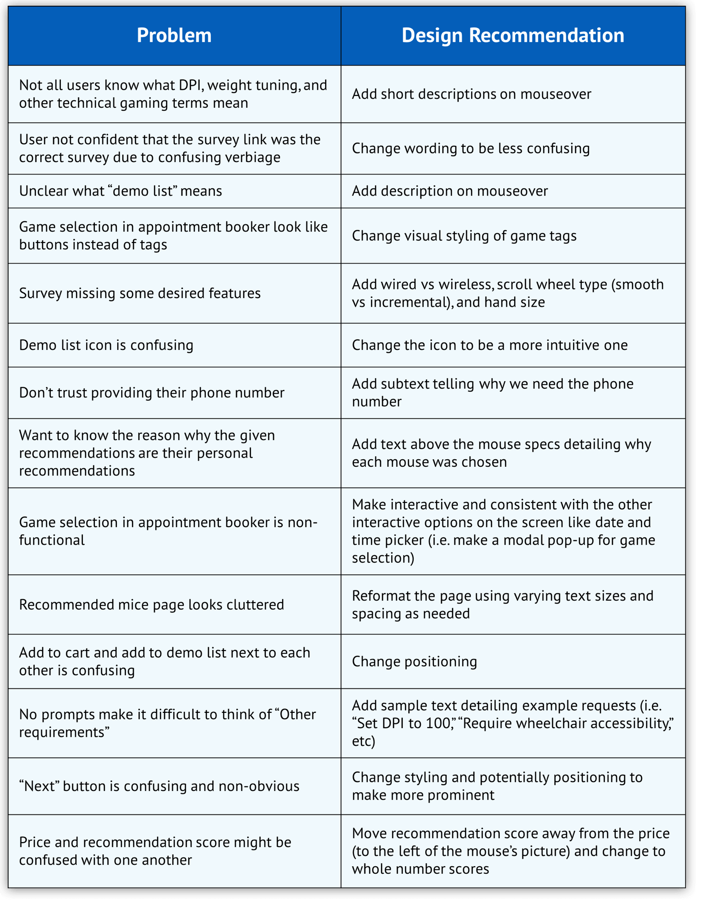

01. Overview
Objective
Tong Qu's iOS app hasn’t been updated for more than one year since previous iOS developers graduated. A lot of bugs came out and students complained about its malfunction and abandoned using it.
Our goal is to imrpove the buying experience of gaming mice in a certain retail context.
My Role
1.In the divergent research part, we split the work and contribute to all the research almost equally.
2.In the convergent research part, I mainly worked on the distribution of survey, execution of contextual inquiry. I also created the user journeys.
3.In the design iteration, we worked together in the ideation, sketch and wireframe phases. When it came to prototype, I finished more than half of the hifi screens. After the project was over, I completed another iteration based on the feedback from users. I also contributed a lot to the cognitive walkthrough and benchmarking test both facilitators and notetakers.
Duration
Sep. 2017 - Dec. 2017
Project Team
Huaiwei Sun | David Lacy | Nikhila Nyapathy | Sarah Brooks
Tools
Pen | Paper | Sketch | JustinMind | inVision
Process

02. DIVERGENT RESEARCH
Methods
Research goals:
1. Learnt about different contexts where users bought gaming mice.
2. Discovered significant issues or potentials in each context.
3. Compared different contexts and made a decision on which context to focus on in the following process.
Selection of Methods and Justification:
1. Physical Store Observation - We visited a Bestbuy store and a Target store in Atlanta. We observed the spatial layout of the store, the shelves for gaming mice and how users interacted with the environment. This method helped us discover some existing pain points in brick and mortar stores.
2. Online Store Walk-through & Task Analyses - We walked through the main online shopping platforms and conducted task analyses of buying a gaming mouse. This method helped us capture the pain points from the online channels.
3. Website Decomposition - We decomposed Logitech's website to learn about the basic components and flows for a online store.(We didn't choose Amazon or bestbuy because they are too complicated and have so many irrelevant parts)
4. Survey - We wanted to learn more about user's past experience of buying gaming mice at a large scale. So we created the survey and sent it to different gaming communities to quickly get responses and insights we needed.
5. Semi-structured Interviews - We wanted to learn more about people's experience within different retail contexts and whys behind their behavior and thoughts. So recruited 7 people who had prior buying experience and had semi-structured interviews.
Physical Store Observation
During our observation in Bestbuy and Target, we found a lot of issues, including limited selections and information, restrictions to the test area, accessibility issues and so on.

Online Store Walk-through & Task Analyses
We studied 3 online stores(Bestbuy.com, Amazon.com, Logitech.com) and conducted task analyses of buying a gaming mouse in each store. The biggest pain point here was that people couldn't not feel it when ergonomics were really important.

Website Decomposition
We decomposed Logitech's website to visualize the complex structure to further understand how pain points could arise from bad information architecture and function design.

Survey
In order to compare online and offline modes of purchase at a large scale. We used survey to let users rate their buying experience and explain why they had a good/bad experience.

Semi-structured Interviews
In order to learn more about users' prior buying experience of gaming mice and pain points they had met. We conducted 7 semi-structured interviews to ask about participants' experiences and probe whys behind their behavior.

Affinity Diagram
We had note briefing seesion immediately after finished the interviews. Then we used affinity diagram to categorize the notes we had and extract the patterns of the purchase of gaming mice.

Comparisons of contexts
Based on the data we collected from methods above, we had a comparative analysis to show the strength and weaknesses of different modes of purchase.

Decision of Context
After a long team discussion, we finally decided that we focused on physical in-store context. And we took Bestbuy as our target store

03. CONVERGENT RESEARCH
Methods
Research goals:
1. Learnt more about Bestbuy context and users who would potentially visit there to buy gaming mice.
2. Researched and analyzed the entire process a user follows, before they visited the store, while in the store and after making a purchase. Found out the pain points in this process and how they affected users' behavior.
3. Generated the user requirements and design criteria for the following design phase.
Selection of Methods and Justification:
1. Survey - We had a very short survey for people who had in-store purchase experience of gaming mice. It was focused on issues users had experienced during in-store puchase and attributes of gaming mice they thought were important. We also collected demographic data about these participants for making personas and user journeys.
2. Contexual Inquiry - Where observations were too vague and surveys couldn’t give us in-depth details and enough whys behind the behavior, contextual inquiries could provide a better understanding of the user’s actions within the context. With the help of participants, we could confirm all the touchpoints, emotional changes and potential issues within the Bestbuy context.
3. Semi-structured Interview - To gain a secondary perspective from a product expert who might elicit useful information on the problem space and other obstacles unbeknownst to the end-users or other designers, a semi-structured interview made sense as it allowed us to follow a guide but at the same time allowed the expert to give their input as it would bring up points which we probably would not be aware of.
Survey
We collected 133 responses from people who had bought gaming mice in Bestuby before. They gave the significance level of the pain points and importance of different attributes of gaming mice.

Contextual Inquiry
We conducted one contextual inquiry in Bestbuy and two retrospective accounts of buying experience in Bestbuy. We observed and listened to how participants interacted with the context and asked questions based on it. We confirmed all the good points and pain points with the participants and probed the reasons behind them. We took notes of all the insights.

Semi-structured Interview
We called the BestBuy at Buckhead in Atlanta, and inquired for the manager, who redirected us to someone who had knowledge in the gaming department. The expert we interviewed was an Alienware specialist who was knowledgeable in gaming mice. We especially wanted to know if there were some restrictions on the clients who stock their brands in store, and if so what they were. For example: are there limitations on what the client (eg: Logitech) can/cannot do in the store?

Affinity Diagram
We aggregated the notes we collected from contextual inquiries and interviews and used affinity diagram to help us categorize all the insights we had.


Personas & User Journeys
Based on the demographic data collected from survey and interviews, we concluded with two personas representing our typical users. Apart from personas, we described their buying experiences using journey maps.

Empathy Map
We also created two empathy maps to supplement the personas to help us better understand users' needs.
 

User Requirements and Design Criteria
Finally, we combined all the insights we had and listed user requirements and design criteria in this table which would lead all the following design phases.

04. DESIGN ITERATION
Brainstorming
Revolving around the user requirements, we tried to come up with as many ideas as we could striving for the quantity.

Idea Evaluation
We evaluated all the ideas we got in the brainstorm session and used creativity-feasibility map to evaluate these ideas. We picked ideas with the highest potential in terms of creativity and feasibility.
We merged these ideas and eventually got four directions: Immersive Demo Area, Personalized Recommendation System, Price Matching System, Efficient Shopping Assistance System.


Sketches
1. Immersive Demo Area
This system enables users choose the devices they wanna try and book a demo slot online. Then all they needed to do is go to the store to enjoy an immersive demo experience at the appointed time and make a confident purchase.

2. Personalized Recommendation System
This system recommends devices to users based on their budgets and games. It also includes expert review and availability check in the nearby stores.

3. Price Matching System
This system lets users scan the product to match the lowest price on the market and get a voucher by print or text messages. Users could show this voucher to the cashier when they check out.

4. Efficient Shopping Assistance System
This system works as an interactive streaming Q&A. Expert streamers could introduce new prodcuts, review existing products and of course answer users' questions related to a certain product here. Users could get instant help anywhere where they could connect to the internet.

Feedback Session for Sketches
We carefully designed our feedback session and recruited 4 participants who had prior gaming experience to help us evaluate the value of these ideas. Finally two of the ideas stood out and we were going to merge them into one system in the prototype phase.


Prototype
The prototype was an add-on to the BestBuy’s website. It consisted of two parts: survey module and appointment module. It’s intended to help users find their ideal devices easily and book an appointment to demo all the devices they want in the immersive demo area in physical BestBuy stores.

Storyboard
Revolving around the user requirements, we tried to come up with as many ideas as we could striving for the quantity.

Feedback Session for Prototype
In this phase we recruited 4 participants who had prior gaming experience to help us evaluate the flow of our prototype and further confirm the value of this idea. Users generally thought this idea was useful especially it was supplemented with a walk-in booking system. We also received many great suggestions in terms of the flow and other interaction details of our prototype.


Prototype Iteration One
1. Suvery System

2. Home Page
3. Demo List Page
4. Completion of Appointment Page
Usability test - Cognitive Walkthrough
Since our prototype was considered an add-on or extension of the BestBuy site, a cognitive walkthrough was appropriate as it was task-specific and able to detect the issues in the user flow, whereas a heuristic evaluation would look more at individual elements on the UI. We recurited 5 experts who had experience in UX research to walkthrough our prototype, finish task and give feedback.


Prototype Iteration Two
1. Survey - Budget Page

2. Survey - Multiple Choices
3. Survey - Result
4. Demo Detail Page
5. Completion of Appointment Page
Usability Benchmarking Test
We had already evaluated the prototype amongst ourselves and experts. It was important to get users from our intended user group, i.e. student gamers and casual gamers in the corporate, to try it out and see if they found it usable. We recruited 5 participants from both schools and corporates who were gamers to help us evaluate the prototype. Usability benchmarking allowed us to collect both qualitative and quantative data to evaluate and improve our prototype.


 

Final Design
This semester project finished after we conducted the benchmarking test. Based on the feedback from the benchmarking test, I iterated again and alterd a lot of design details myself.

Final Prototype
I also used inVision to recreate a prototype. Feel free to play with it and share your feedback with me.